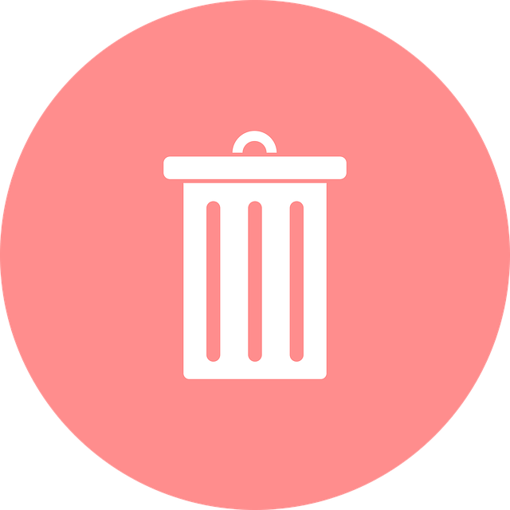

We believe security software like Kicksecure needs to remain Open Source and independent. Would you help sustain and grow the project? Learn more about our 11 year success story and maybe DONATE!

A step-by-step guide to uninstalling Kicksecure.
Removing Kicksecure
From time to time, users inquire about the process of uninstalling Kicksecure, possibly as a precursor to a Factory Reset (reinstallation).
It depends on the installation method. Choose below.
Distribution Morphing
If the user installed using Distribution Morphing using the morph Debian into Kicksecure instructions, then the user can attempt to uninstall the meta package which they have previously installed. Then run "sudo apt autoremove", review the output and proceed if that looks OK. Untested.
ISO
If the user installed using ISO, then simply install another operating system.
Virtual Machines
If using virtual machine (VM), here's how to uninstall Kicksecure VM(s).
NOTE: The following instructions are generic and not unique to Kicksecure. They pertain to typical operations associated with virtualization software, and no additional steps are specifically required for Kicksecure.
1. Remove the Kicksecure VM(s).
You can simply delete the VMs you wish to remove using the virtual machine manager.
2. (Optional) Uninstall the virtualization software.
The method for this varies based on your host operating system.
3. Completion.
At this point, the uninstallation process is complete.
See Also
Categories: Documentation